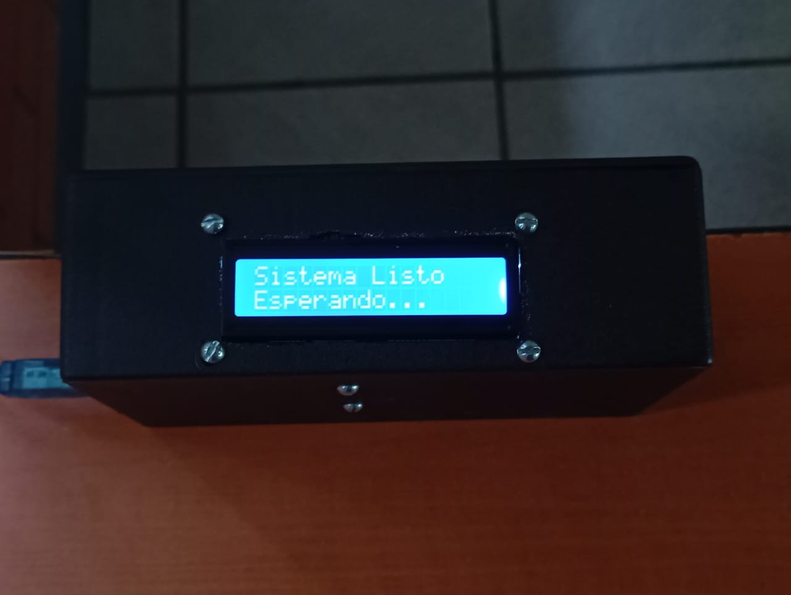
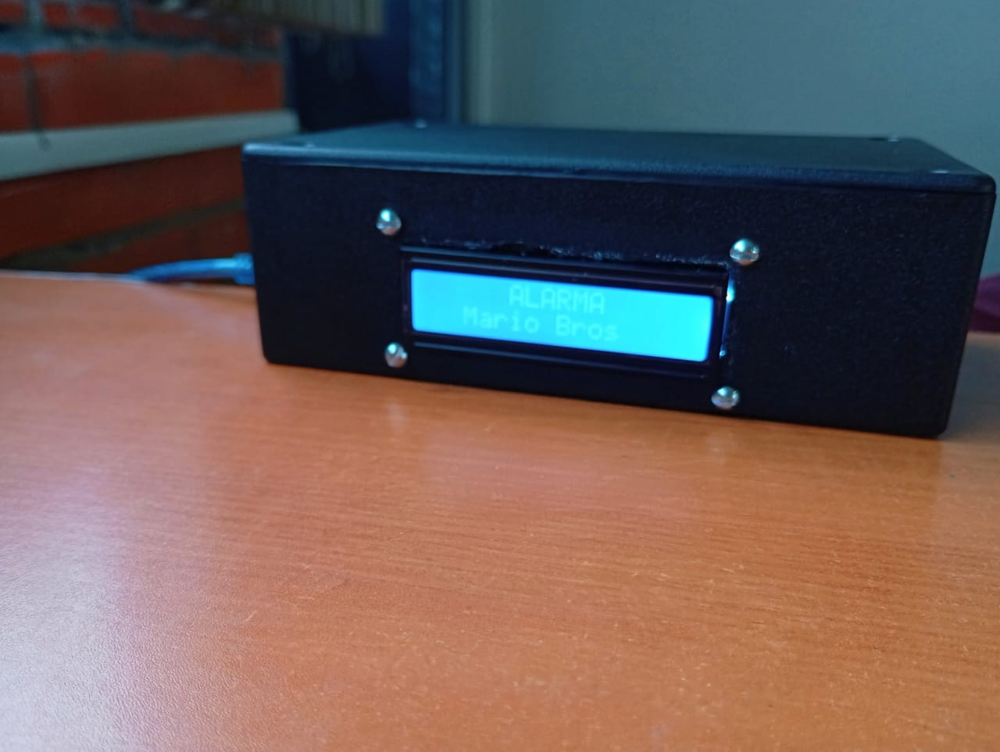
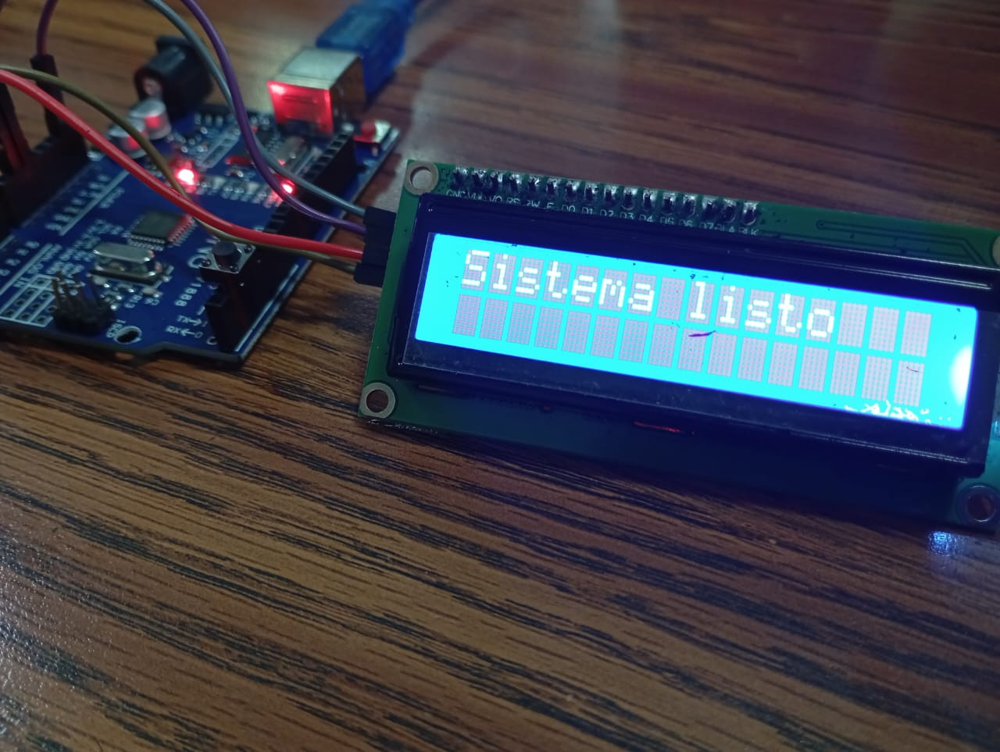
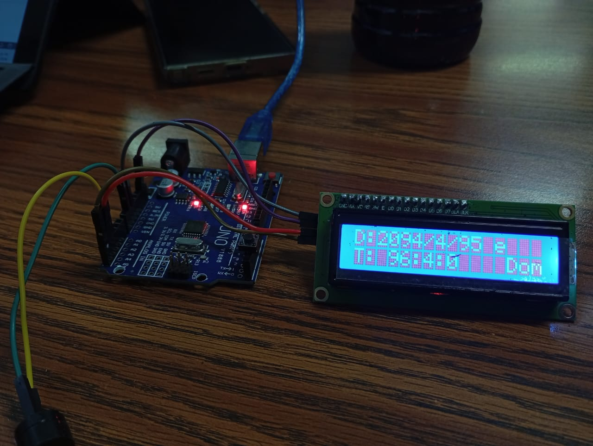

Galería del Timbre





📖 Acerca de Digital Bell System
Digital Bell System es un proyecto tecnológico diseñado para automatizar el control de horarios escolares mediante el uso de componentes electrónicos como Arduino y ESP32.
Su principal objetivo es mejorar la organización dentro de las instituciones educativas, permitiendo que los timbres se activen automáticamente en horarios específicos para entradas, salidas, recreos y eventos especiales.
Este sistema busca reducir errores humanos, mejorar la puntualidad y facilitar la administración de los tiempos escolares.
🛠️ Desarrollo del Proyecto
El desarrollo de Digital Bell System comenzó con la investigación de sistemas automatizados aplicados al entorno escolar.
Posteriormente se seleccionaron componentes como Arduino UNO, ESP32, cables de conexión, botón pulsador y una caja de protección para construir el prototipo.
Se programaron horarios automáticos para el funcionamiento del timbre y se realizaron pruebas para verificar la correcta ejecución de cada evento programado.
Como mejora futura, el proyecto podría incorporar conexión WiFi, administración remota desde dispositivos móviles y almacenamiento de horarios en línea.